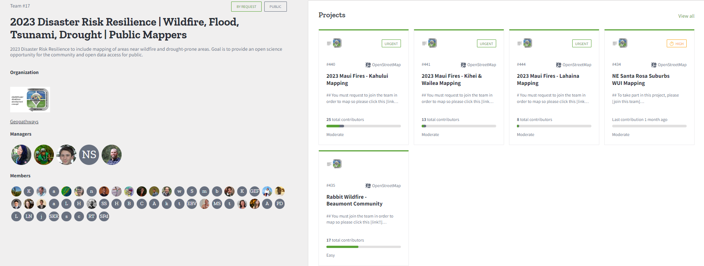

Student-Athlete @ Colorado College
Recently, I have been working on the 2023 Disaster Risk Resilience Project with my team at the USGS and FGDC. We have been working to map out various places in Hawaii with concerns to the recent wildfires. We hope to create and provide data, which can be used to advance regional initiatives and the use of Geospatial information. 